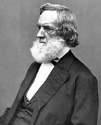
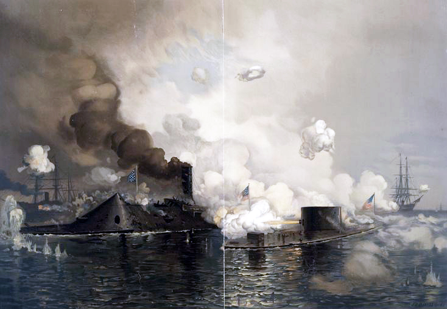

|
The Union's strategy in the Civil War demanded a great deal
of its navy. And despite starting the war with few ships of
any value, the navy eventually proved up to the task,
playing a critical role in helping the Union to achieve
victory. "At all the watery margin, they have been present,"
noted President Abraham Lincoln toward the end of the war.
"Not only on the deep sea, the broad bay, the rapid river,
|

Gideon Welles
|
but also up the narrow muddy bayou, and wherever the ground
was a little damp, they have made their tracks."
When Union Secretary of the Navy Gideon Welles took
office, he found himself with a fleet that was entirely
inadequate for the Union's needs. The navy had only ninety
ships, and the vast majority were either unseaworthy, in
faraway ports, or still under construction. Only fourteen
ships were actually in United States waters and ready for
service, and the majority of these were not warships. So,
like the Confederacy, the United States was largely forced
to build its fleet from scratch. Ultimately, this proved a
hidden blessing for the Union navy, because it benefited
from a revolution in naval warfare begun in the two decades
preceding the war. Steam engines replaced sails. Ships began
to be plated with iron, which could withstand cannon fire
much more effectively than wood. Powerful new guns and
ordnance were developed. Welles was determined to piece
together a large navy that utilized all of these new
technologies, and backed by the economic power of the North,
he was able to do so - building, purchasing or leasing
hundreds of vessels. Eight months after the war started, the
Union Navy had grown to 264 ships. A year later the number
was at 427, and by the end of the war there were 671 ships
on the Navy department's register, making the Union Navy the
largest in the world.
Of course, so large a navy could not have been put out to
sea without a substantial number of sailors. Unlike the
Confederacy, the Union Navy never had problems finding
enough manpower. The officer corps, numbering 1,457 men at
the start of 1861, did suffer some defections to the South.
However, more than enough talented officers remained, among
them David Farragut, Samuel F. Du Pont, David Dixon Porter
and John Dahlgren. The ranks of enlisted men grew rapidly
throughout the war, from 7,600 in 1861 to 51,000 in 1865.

David Dixon Porter
|
Many of these sailors were African-Americans, who were able
to serve in the Navy throughout the Civil War.
The Union Navy had three main tactical objectives during
the war. The first, and best known, was a blockade of
Southern ports. The purpose of the blockade was to seal off
southern ports on the Atlantic coast, Gulf coast, and
Mississippi River so that the Confederacy would be unable to
export cotton or import the goods that were needed to
survive and to wage the war. This was not an easy job, for
the Confederacy had more than 3,000 miles of coastline to be
patrolled. In the early years of the war when the Union Navy
lacked ships, the blockade was dismissed by critics as a
"paper blockade." However, as the Navy expanded and its
officers grew more experienced over the course of the war,
the blockade became fairly effective. In 1860, the last year
before the Civil War began, the South exported 816 million
pounds of cotton. In 1864, exports of cotton totaled less
than 3 million pounds. The Confederacy kept no official
records on how many ships trying to run the blockade were
captured or destroyed, but Union officials placed the number
at about 1,500.
The Union's Navy's second goal was to protect northern
shipping routes from Confederate commerce raiders. The
commerce raiders were generally operated by the Confederate
Navy, and were responsible for capturing or destroying as
many northern merchant ships as possible. The fight against
the commerce raiders was the most difficult of the Union
Navy's responsibilities during the Civil War. First, the
open seas are almost impossible to patrol. Perhaps more
importantly, the fight against the commerce raiders led to
diplomatic conflicts. The most significant of these occurred
in November of 1861, when Captain Charles Wilkes of the U.S.S.
San Jacinto boarded the British steamer Trent and removed
two Confederate agents on board. For a period of time,
Britain threatened war over what came to be called "The
Trent Affair." Eventually, the British were mollified, and
war was averted. Union Navy commanders learned their lesson,
and though occasional missteps occurred throughout the war,
none were as serious as the Trent affair. Meanwhile, the
Navy had a few notable successes in fending off the commerce
raiders. The most prominent of these was the June, 1864,
sinking of the Alabama, the Confederacy's most successful
raider.
The Union Navy's final and most important objective was
to assist the Army in its operations against the
|

The Battle of Hampton Roads
|
Confederacy. In some cases, the Navy was able to capture key
strategic locations largely on its own. Such was the case
with New Orleans and Charleston. More often, the Navy
supported the Union Army's forces on land. Naval bombardment
played an important role in capturing Fort Donelson,
Vicksburg, and Mobile Bay, Although regularly participating
in engagements being fought on land, the Union Navy rarely
engaged in traditional warship versus warship naval warfare.
This is because the Confederate Navy would generally retreat
from confrontations between warships, unable to afford the
losses that such battles brought. The Union Navy's most
famous engagement did involve combat between warships,
however. The Battle of Hampton Roads pitted the ironclad
U.S.S. Monitor against the ironclad C.S.S. Virginia.
Although ironclads had been in used in naval combat before
the Civil War, Hampton Roads marked the first time that an
ironclad faced off against another ironclad. The battle
ended in a draw, and had virtually no impact on the overall
course of the war. Nonetheless, Hampton Roads received a
great deal attention in both North and South, and throughout
the world. This helped usher in an arms race among the naval
powers of the world, as they scrambled to convert their
fleets to ships made of iron, and eventually steel.
Despite its humble beginnings, then, the Union Navy came
to play an important role during the Civil War. It helped
disrupt the economy of the South, to protect the economy of
the North, and it provided critical assistance for the Union
Army. The Union Navy must be given a substantial portion of
the credit for the defeat of the Confederacy.
Source: Joan Waugh, ed., Facts on File Encyclopedia of American
History: Civil War and Reconstruction, 1856 to 1869 (New York: Facts on
File, 2003), 368-370.
|